Get started
The mapmaker is a single HTML file. There is nothing to install and no account to create.
- Download
mapmakerdnd.htmlfrom the dm folder on GitHub (open the file, then use the download button). - Open it in Chrome, Edge, Firefox or Safari. It works offline.
- You will see the title and size boxes and the toolbar at the top, the tools on the left, the map in the middle, and the combatants, log and traps on the right.
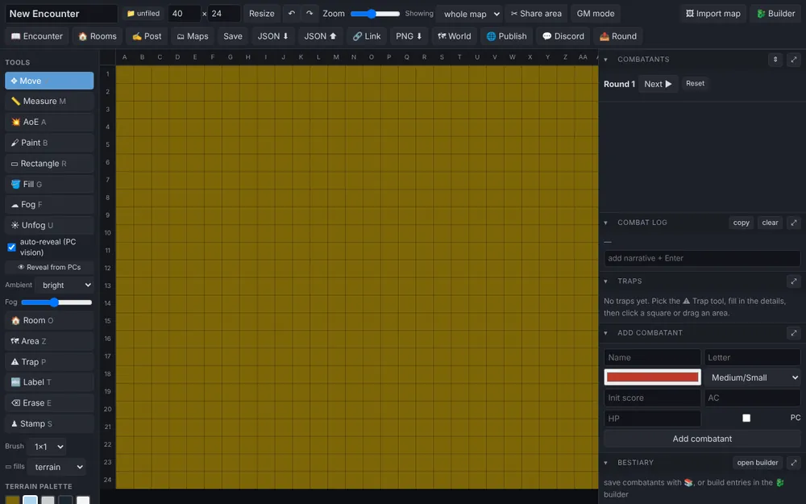
Your maps are stored inside the browser, on this computer. Clearing the browser data removes them, and in some browsers a copy of the file kept in another folder starts with an empty list. Press JSON ⬇ now and then to save a backup file; JSON ⬆ loads it back.
Tus mapas se guardan dentro del navegador, en este ordenador. Si borras los datos del navegador desaparecen, y en algunos navegadores una copia del archivo en otra carpeta empieza con la lista vacía. Pulsa JSON ⬇ de vez en cuando para guardar una copia de seguridad; JSON ⬆ la vuelve a cargar.
✓ You have the tool open and know where your maps are kept.
Primeros pasos
El mapmaker es un único archivo HTML. No hay nada que instalar ni cuenta que crear.
- Descarga
mapmakerdnd.htmldesde la carpeta dm de GitHub (abre el archivo y usa el botón de descarga). - Ábrelo en Chrome, Edge, Firefox o Safari. Funciona sin conexión.
- Verás los cuadros de título y tamaño y la barra de botones arriba, las herramientas a la izquierda, el mapa en el centro, y los combatientes, el registro y las trampas a la derecha.
✓ Tienes la herramienta abierta y sabes dónde se guardan tus mapas.
Your first battle map
Draw the map
- Type a name in the title box at the top left. Set the size in squares (columns × rows) and press Resize.
- In the Terrain palette (bottom of the left column) pick a swatch. Then use Paint (B) for single squares, Rectangle (R) for blocks, or Fill (G) for a closed area. Swatches such as rock and wall block sight; their tooltip says so.
- Prefer a picture? Press 🖼 Import map, choose the image, mark the part that contains the grid and enter how many columns and rows it has.
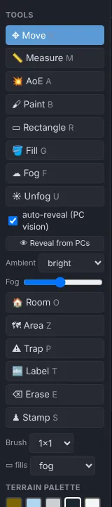
Add creatures
- In Add combatant (right column) enter a name, a letter for the token, a colour, a size, initiative, AC and HP. Tick PC for player characters, then press Add combatant.
- Open the creature's row with ▸, press 📍, then click a square on the map to place it.
- With Move (V) drag tokens around. Next ▶ passes the turn in initiative order and Reset starts the round again.
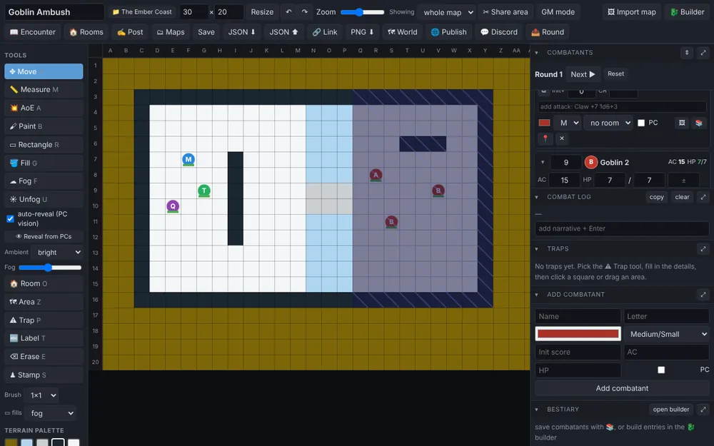
See what your players see
The GM mode button at the top switches to the players' view. ⬅ back to GM returns.
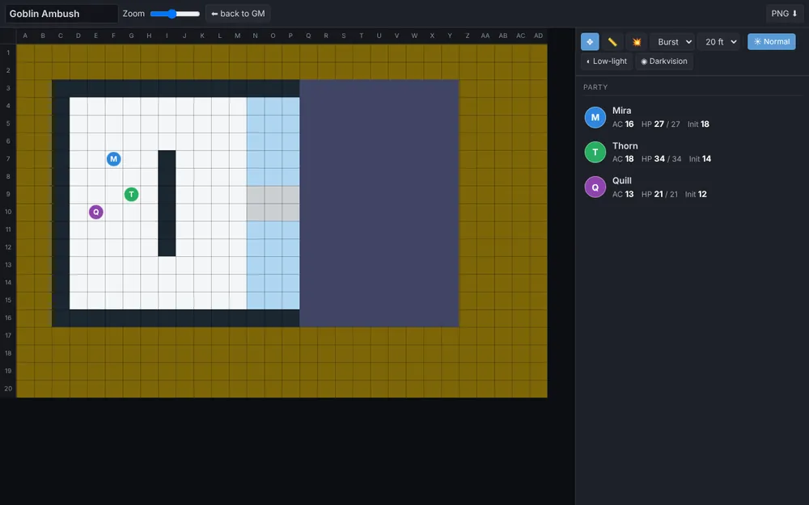
Every tool has a single-letter shortcut: V move, M measure, A area of effect, B paint, R rectangle, G fill, F fog, U unfog, E erase.
Cada herramienta tiene un atajo de una letra: V mover, M medir, A área de efecto, B pintar, R rectángulo, G rellenar, F niebla, U quitar niebla, E borrar.
✓ You have a map with terrain, creatures and a turn order.
Tu primer mapa de combate
Dibuja el mapa
- Escribe un nombre en el cuadro de título, arriba a la izquierda. Fija el tamaño en casillas (columnas × filas) y pulsa Resize.
- En la Terrain palette (parte baja de la columna izquierda) elige una muestra de color. Después usa Paint (B) para casillas sueltas, Rectangle (R) para bloques o Fill (G) para un área cerrada. Muestras como roca y muro bloquean la vista; su descripción lo indica.
- ¿Prefieres una imagen? Pulsa 🖼 Import map, elige la imagen, marca la parte que contiene la cuadrícula e indica cuántas columnas y filas tiene.
Añade criaturas
- En Add combatant (columna derecha) escribe nombre, una letra para la ficha, color, tamaño, iniciativa, CA y PG. Marca PC para los personajes de jugador y pulsa Add combatant.
- Abre la fila de la criatura con ▸, pulsa 📍 y haz clic en una casilla del mapa para colocarla.
- Con Move (V) arrastra las fichas. Next ▶ pasa el turno según la iniciativa y Reset reinicia la ronda.
Mira lo que ven tus jugadores
El botón GM mode de arriba cambia a la vista de los jugadores. ⬅ back to GM vuelve.
✓ Tienes un mapa con terreno, criaturas y orden de turnos.
Fog, vision and areas
Fog
- Fog (F) hides squares and Unfog (U) reveals them. With Rectangle, set the fills menu to fog to cover a whole block in one drag.
- Tick auto-reveal (PC vision) and the fog around a PC clears whenever it moves. 👁 Reveal from PCs does it once, right now.
- Set Ambient light to bright, dim or dark for areas outside any room. In the players' view each player can choose Normal, Low-light or Darkvision.
Fog is opaque in the players' view and in every image you share, so unexplored terrain stays hidden. Tokens inside fog are not shown to them.
La niebla es opaca en la vista de los jugadores y en cualquier imagen que compartas, así que el terreno sin explorar sigue oculto. Las fichas dentro de la niebla no se les muestran.
Share only part of the map
Press ✂ Share area and drag a rectangle. Players, PNG exports and Discord posts then show only that part. The Showing menu returns to the whole map.
Measure and areas of effect
Measure (M) gives the distance between two points. AoE (A) places a burst or another template of the size you choose and lists the creatures it catches.
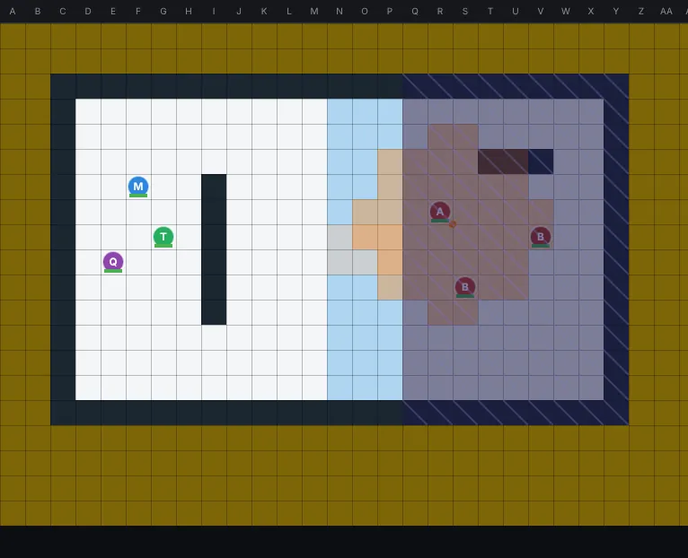
Rooms, traps and labels
Room (O) outlines a room so you can override its lighting and deploy its enemies. Trap (P): fill in the details, then click a square or drag an area. Label (T) writes text on the map.
✓ You can hide, reveal and share exactly the part of the map you want.
Niebla, visión y áreas
Niebla
- Fog (F) oculta casillas y Unfog (U) las revela. Con Rectangle, pon el menú fills en fog para cubrir un bloque entero de un arrastre.
- Marca auto-reveal (PC vision) y la niebla alrededor de un PJ se despeja cada vez que se mueve. 👁 Reveal from PCs lo hace una vez, ahora mismo.
- Fija la luz Ambient en bright, dim o dark para las zonas fuera de cualquier sala. En la vista de jugadores cada uno puede elegir Normal, Low-light o Darkvision.
Comparte solo una parte del mapa
Pulsa ✂ Share area y arrastra un rectángulo. Los jugadores, las exportaciones PNG y los envíos a Discord muestran solo esa parte. El menú Showing vuelve al mapa completo.
Medir y áreas de efecto
Measure (M) da la distancia entre dos puntos. AoE (A) coloca una explosión u otra plantilla del tamaño que elijas e indica qué criaturas alcanza.
Salas, trampas y etiquetas
Room (O) delimita una sala para cambiar su iluminación y desplegar a sus enemigos. Trap (P): rellena los detalles y haz clic en una casilla o arrastra un área. Label (T) escribe texto sobre el mapa.
✓ Puedes ocultar, revelar y compartir justo la parte del mapa que quieras.
Encounters
- 🐉 Builder keeps a bestiary. Paste a one-line stat block into the box at the bottom (the box shows the format) and press + add to bestiary. Set the party size and average level and the encounter level (EL) updates as you add creatures. Add & deploy puts them on the map.
- 📖 Encounter opens a notes document with an overview and one section per room. Text under a
## Playersheading is the part players may see; everything else stays private. - 🏠 Rooms opens the same document at the rooms.
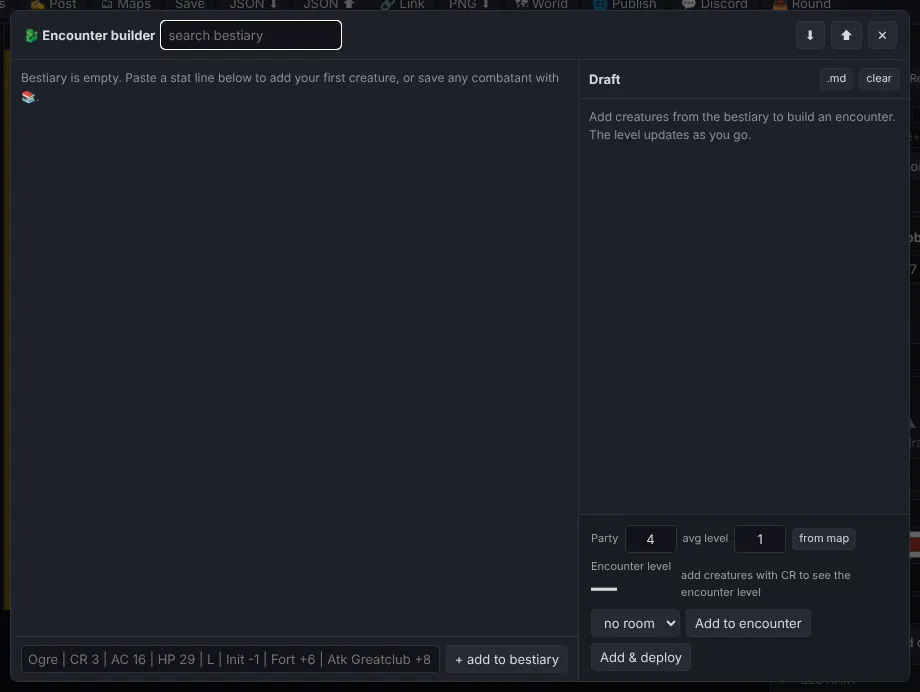
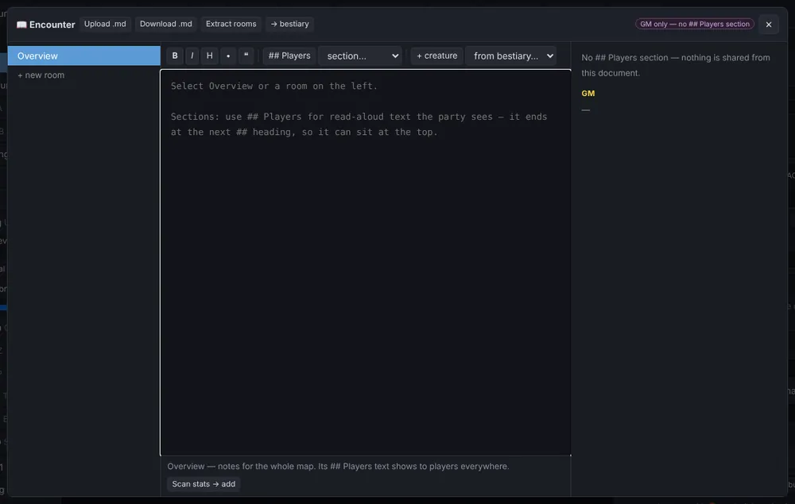
✓ You have a prepared encounter with its notes.
Encuentros
- 🐉 Builder guarda un bestiario. Pega un bloque de estadísticas de una línea en el cuadro inferior (el cuadro muestra el formato) y pulsa + add to bestiary. Indica el tamaño del grupo y el nivel medio y el nivel de encuentro (EL) se actualiza al añadir criaturas. Add & deploy las coloca en el mapa.
- 📖 Encounter abre un documento de notas con un resumen y una sección por sala. El texto bajo un encabezado
## Playerses lo que pueden ver los jugadores; todo lo demás es privado. - 🏠 Rooms abre el mismo documento en las salas.
✓ Tienes un encuentro preparado con sus notas.
Share on Discord
- In Discord open the channel settings, go to Integrations → Webhooks, create a webhook and copy its URL.
- In the mapmaker press 💬 Discord, paste the URL and press Test. Every campaign has its own webhook.
- Use 📤 Post round (map + log), Post description or Post initiative. Maps are cropped to the area you are showing.
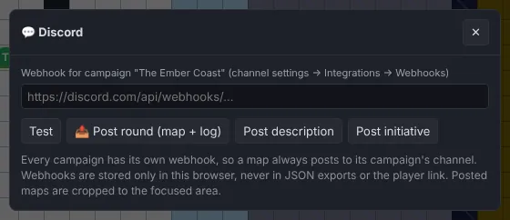
For play-by-post forums, ✍ Post opens a composer with templates, creature stat lines and a BBCode button that copies the text.
A webhook lets anyone who has it post in your channel. It is kept only in this browser and never goes into JSON exports or links. Do not paste it anywhere public.
Un webhook permite publicar en tu canal a cualquiera que lo tenga. Solo se guarda en este navegador y nunca va en las exportaciones JSON ni en los enlaces. No lo pegues en ningún sitio público.
✓ Your players are seeing the map in Discord.
Compartir en Discord
- En Discord abre los ajustes del canal, ve a Integraciones → Webhooks, crea un webhook y copia su URL.
- En el mapmaker pulsa 💬 Discord, pega la URL y pulsa Test. Cada campaña tiene su propio webhook.
- Usa 📤 Post round (map + log), Post description o Post initiative. Los mapas se recortan al área que estés mostrando.
Para foros de juego por correo, ✍ Post abre un editor con plantillas, líneas de estadísticas de criaturas y un botón BBCode que copia el texto.
✓ Tus jugadores ven el mapa en Discord.
Publish to a site
Publishing gives your players one link that always shows your latest map, with no need to post images. You need a site address and a DM key: either your own server (see the README) or a key from me.
- Give the map a campaign. Press 🗂 Maps, type the campaign name and press Save. A map must belong to a campaign before it can be published.
- Press 🌐 Publish. Under Site enter the site address and your DM key, then press Test connection.
- Press Publish. The preview shows exactly what players will get. A link appears: press Copy link and send it to your players.
- After changing the map, press Publish again and players reload the page.
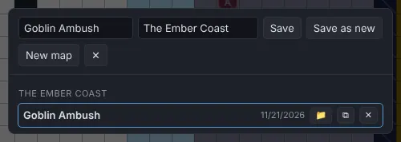
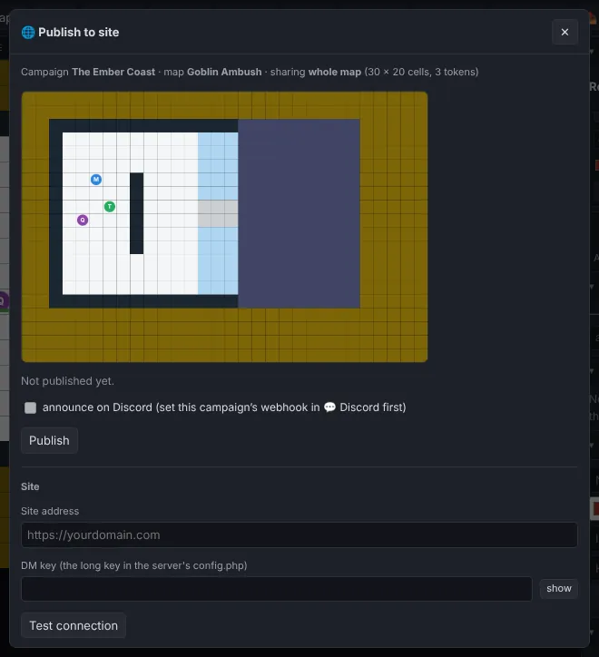
Players open the link on a phone or computer, zoom in, see grid coordinates and can copy or download the image. They only get the area you shared. Fog, hidden tokens and your notes are never uploaded.
Los jugadores abren el enlace en el móvil o el ordenador, hacen zoom, ven las coordenadas de la cuadrícula y pueden copiar o descargar la imagen. Solo reciben el área que compartiste. La niebla, las fichas ocultas y tus notas nunca se suben.
Anyone with the link can look at the map, so treat it like a password. If it leaks, press Rotate link: the old link stops working and you send the new one. Never share your DM key; it stays in this browser.
Cualquiera con el enlace puede ver el mapa, así que trátalo como una contraseña. Si se filtra, pulsa Rotate link: el enlace antiguo deja de funcionar y envías el nuevo. No compartas nunca tu clave de DM; se queda en este navegador.
✓ Your players have a link to the map.
Publicar en una web
Publicar da a tus jugadores un solo enlace que siempre muestra tu último mapa, sin tener que enviar imágenes. Necesitas la dirección de una web y una clave de DM: tu propio servidor (consulta el README) o una clave mía.
- Asigna una campaña al mapa. Pulsa 🗂 Maps, escribe el nombre de la campaña y pulsa Save. Un mapa debe pertenecer a una campaña para poder publicarlo.
- Pulsa 🌐 Publish. En Site escribe la dirección de la web y tu clave de DM, y pulsa Test connection.
- Pulsa Publish. La vista previa muestra exactamente lo que recibirán los jugadores. Aparece un enlace: pulsa Copy link y envíalo a tus jugadores.
- Tras cambiar el mapa, pulsa Publish otra vez y los jugadores recargan la página.
✓ Tus jugadores tienen un enlace al mapa.
The world map
Press 🗺 World to open the hex map of the current campaign. There is one world per campaign.
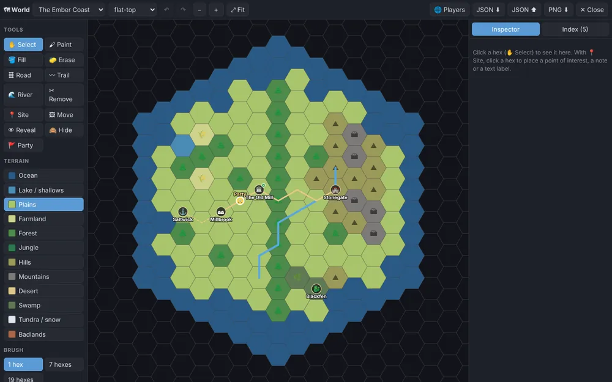
Paint the land
- Pick a terrain in the list, then Paint hexes. The brush covers one hex or seven. Fill floods an area and Erase removes terrain.
- Road, Trail and River: press and drag across the hexes to draw the line. Remove (✂) deletes a stretch the same way.
- The menu at the top switches between flat-top and pointy-top hexes. Coordinates such as
03.07appear on the map so players can quote them in their posts. - For a hand-drawn map use 🖼 Import image… in the inspector, place it with Move image and lower the terrain opacity so the picture shows through.
Mark places
Choose Site and click a hex. In the inspector set the type (town, ruin, castle, lair…), the name, an optional Name for players, a Player blurb and your private DM notes. A place is only shown to players if its hex is revealed and Visible to players is ticked.
✓ You have a painted world with roads, rivers and places.
El mapa del mundo
Pulsa 🗺 World para abrir el mapa hexagonal de la campaña actual. Hay un mundo por campaña.
Pinta la tierra
- Elige un terreno de la lista y usa Paint sobre los hexágonos. El pincel cubre uno o siete. Fill rellena un área y Erase quita el terreno.
- Road, Trail y River: mantén pulsado y arrastra por los hexágonos para dibujar la línea. Remove (✂) borra un tramo del mismo modo.
- El menú de arriba alterna entre hexágonos con vértice arriba o con lado arriba. En el mapa aparecen coordenadas como
03.07para que los jugadores las citen en sus mensajes. - Para un mapa dibujado a mano usa 🖼 Import image… en el inspector, colócalo con Move image y baja la opacidad del terreno para que se vea la imagen.
Marca lugares
Elige Site y haz clic en un hexágono. En el inspector fija el tipo (pueblo, ruina, castillo, guarida…), el nombre, un Name for players opcional, un Player blurb y tus DM notes privadas. Un lugar solo se muestra a los jugadores si su hexágono está revelado y Visible to players está marcado.
✓ Tienes un mundo pintado con caminos, ríos y lugares.
Link places to battle maps
Any place can lead to the battle map where the action happens.
- Save the battle map in the same campaign as the world (chapter 6, step 1).
- In the world, select the place with Site or Select. In the inspector, under the map link, press Change… and pick the battle map. Open ▶ jumps to it and Unlink removes the link.
- Keep Players can open this battle map from the world page ticked if you want players to reach it. Untick it for a map you are not ready to show.
- Publish the battle map (chapter 6), then publish the world (chapter 9). The order does not matter, but both must be published.
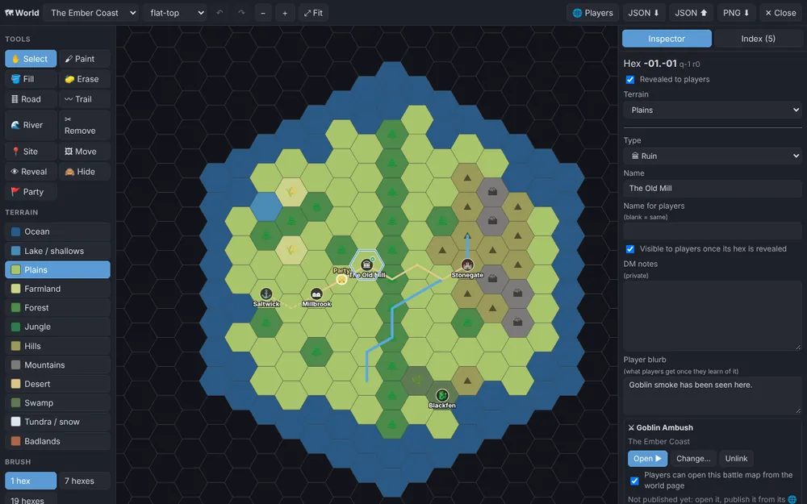
Once the place is revealed and its battle map is published, players see an ⚔ Open battle map button in the sidebar. It opens the map in the same page, and a ← World button brings them back.
Cuando el lugar está revelado y su mapa de combate publicado, los jugadores ven un botón ⚔ Open battle map en la barra lateral. Abre el mapa en la misma página y un botón ← World los devuelve.
✓ A place on the world map leads to its battle map.
Enlazar lugares con mapas de combate
Cualquier lugar puede llevar al mapa de combate donde ocurre la acción.
- Guarda el mapa de combate en la misma campaña que el mundo (capítulo 6, paso 1).
- En el mundo, selecciona el lugar con Site o Select. En el inspector, bajo el enlace al mapa, pulsa Change… y elige el mapa de combate. Open ▶ salta a él y Unlink quita el enlace.
- Deja marcado Players can open this battle map from the world page si quieres que los jugadores lleguen a él. Desmárcalo para un mapa que aún no quieres enseñar.
- Publica el mapa de combate (capítulo 6) y después el mundo (capítulo 9). El orden da igual, pero hay que publicar ambos.
✓ Un lugar del mapa del mundo lleva a su mapa de combate.
Reveal and travel
- Reveal shows hexes to players and Hide covers them again. Click or drag; the brush size applies.
- Party (🚩) places the party marker, drawn as two crossed swords. Move it as the group travels.
- Press 🌐 Players to see what the players will get and to publish. You can post the image to Discord (with the campaign's webhook), publish it to your site, or both.
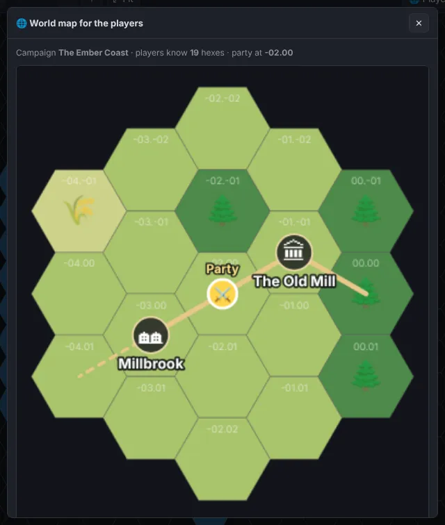
Players get only revealed hexes, roads between two revealed hexes, places you marked visible (with their player name and blurb) and the party marker. Hidden hexes, DM notes and your battle-map links are never in the image or the data.
Los jugadores reciben solo los hexágonos revelados, los caminos entre dos hexágonos revelados, los lugares que marcaste como visibles (con su nombre y descripción para jugadores) y el marcador del grupo. Los hexágonos ocultos, tus notas y tus enlaces a mapas de combate nunca van en la imagen ni en los datos.
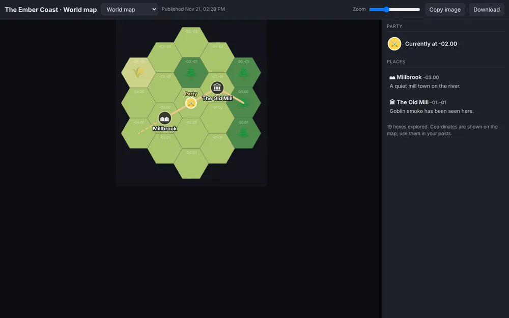
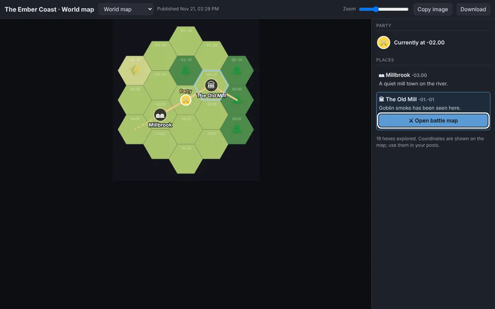
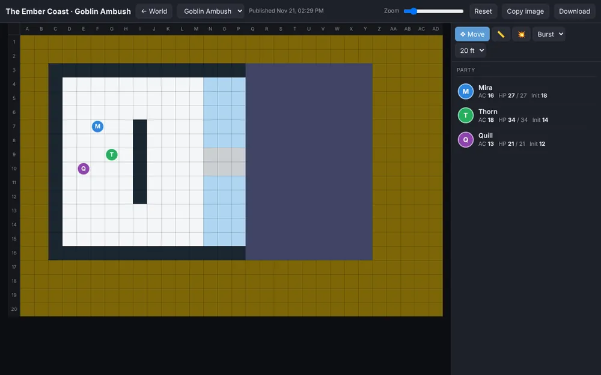
✓ Your players can follow the party across the world and open the battle maps you chose.
Revelar y viajar
- Reveal muestra hexágonos a los jugadores y Hide los vuelve a cubrir. Haz clic o arrastra; se aplica el tamaño del pincel.
- Party (🚩) coloca el marcador del grupo, dibujado como dos espadas cruzadas. Muévelo mientras el grupo viaja.
- Pulsa 🌐 Players para ver lo que recibirán los jugadores y publicar. Puedes enviar la imagen a Discord (con el webhook de la campaña), publicarla en tu web, o ambas cosas.
✓ Tus jugadores pueden seguir al grupo por el mundo y abrir los mapas de combate que elegiste.
Troubleshooting
- Players see "the link has changed". You rotated the link. Send them the new one from the Publish panel.
- The Publish button says to give the map a campaign. Save the map in a campaign first (chapter 6, step 1).
- The test connection fails. Check the site address (it starts with
https://) and paste the DM key again. After too many wrong tries the server asks you to wait ten minutes. - A quota message. If you reach your storage or campaign limit on a shared server, unpublish old maps or ask the server owner. A "belongs to another DM" message means the campaign ID clashes with someone else's; tell the server owner.
- No ⚔ Open battle map button. The place must be revealed and visible, the link ticked, the battle map in the same campaign and published, and the world published after the link was made.
- A map disappeared. Maps live in this browser. Restore from a JSON backup (chapter 1). A published map can also be removed from the server when you pass the limit of maps per campaign; publish it again.
✓ You know where to look when something does not show up.
Solución de problemas
- Los jugadores ven "the link has changed". Rotaste el enlace. Envíales el nuevo desde el panel Publish.
- Publish dice que asignes una campaña al mapa. Guarda antes el mapa en una campaña (capítulo 6, paso 1).
- Falla la prueba de conexión. Revisa la dirección de la web (empieza por
https://) y pega de nuevo la clave de DM. Tras demasiados intentos erróneos el servidor te pide esperar diez minutos. - Un mensaje de cuota. Si alcanzas tu límite de espacio o de campañas en un servidor compartido, despublica mapas antiguos o consulta al dueño del servidor. Un mensaje de "pertenece a otro DM" indica que el ID de la campaña choca con el de otra persona; avisa al dueño del servidor.
- No aparece el botón ⚔ Open battle map. El lugar debe estar revelado y visible, el enlace marcado, el mapa de combate en la misma campaña y publicado, y el mundo publicado después de crear el enlace.
- Desapareció un mapa. Los mapas viven en este navegador. Restaura desde una copia JSON (capítulo 1). Un mapa publicado también puede borrarse del servidor al superar el límite de mapas por campaña; publícalo de nuevo.
✓ Sabes dónde mirar cuando algo no aparece.
Want to publish on my server?
If you do not have a server of your own, ask me for a key and publish your maps here. By invitation for now.
¿Quieres publicar en mi servidor?
Si no tienes servidor propio, pídeme una clave y publica aquí tus mapas. Por invitación de momento.